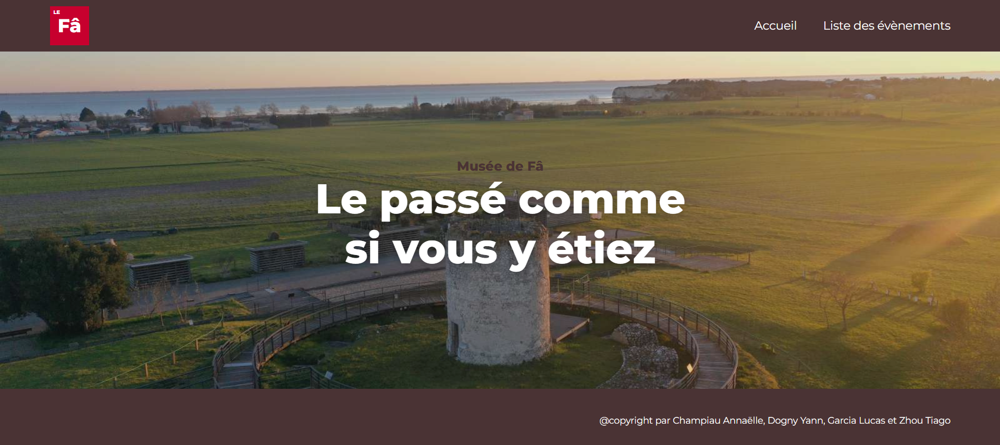
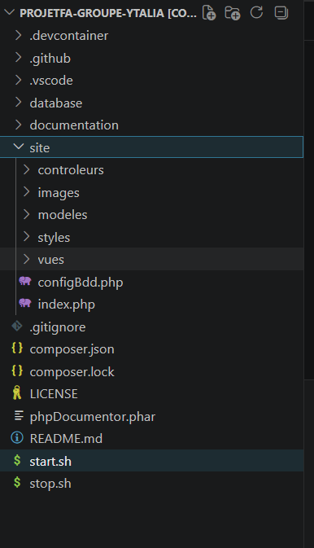
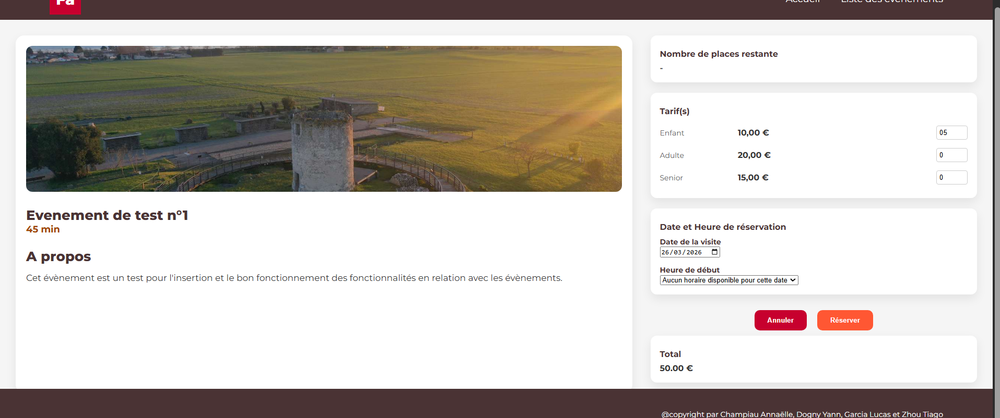

Pour répondre à la problématique de forte affluence estivale du site archéologique du Fâ, nous avons conçu une solution de réservation en ligne. La contrainte technique majeure était l'absence de framework : nous avons donc implémenté une architecture MVC de A à Z en PHP 8. Ce travail d'équipe a été rythmé par la méthode SCRUM, garantissant une livraison itérative et adaptée aux besoins de gestion des entrées.
Voici à quoi ressemble notre architecture :

Nous avons pris du retard sur la partie "Back-end" de la validation. Nous avons donc choisi de livrer un prototype fonctionnel de l'interface : l'utilisateur peut choisir ses dates et ses billets, et le système calcule automatiquement le prix total, même si le bouton de confirmation n'est pas encore relié à la base de données.
